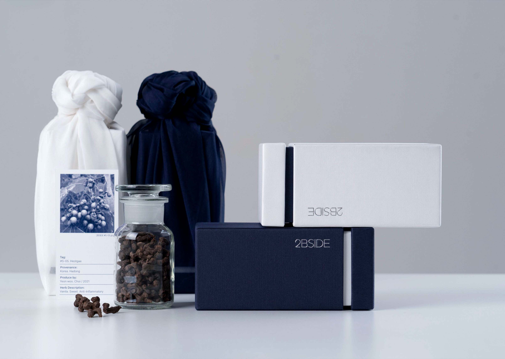

«#S-02. Sejac»
Local Tea from Hadong
- 
-

1000년의 역사를 가진 하동의 녹차입니다. 섬진강의 물안개와 낮과 밤의 기온 차, 그리고 지리산의 험한 계곡 등. 차나무가 자라기 적합한 환경 속에서 채엽한 최고의 찻잎입니다. 곡우에서 입하 사이에 채엽한 어린잎으로 고소하고 부드러워 햇차로 즐기기에 좋으며, 주로 청취 빛의 수색을 띠기에 찻물을 잔에 따르면 작은 물결을 보는 시각적인 재미도 있습니다. 동의보감에 의하면 세작은 기를 내리게 해주고 뱃속의 오래된 음식을 소화시키며, 이뇨 작용을 하여 당뇨를 치료하는 등 다양한 효능이 있다고 기록되어 있습니다.